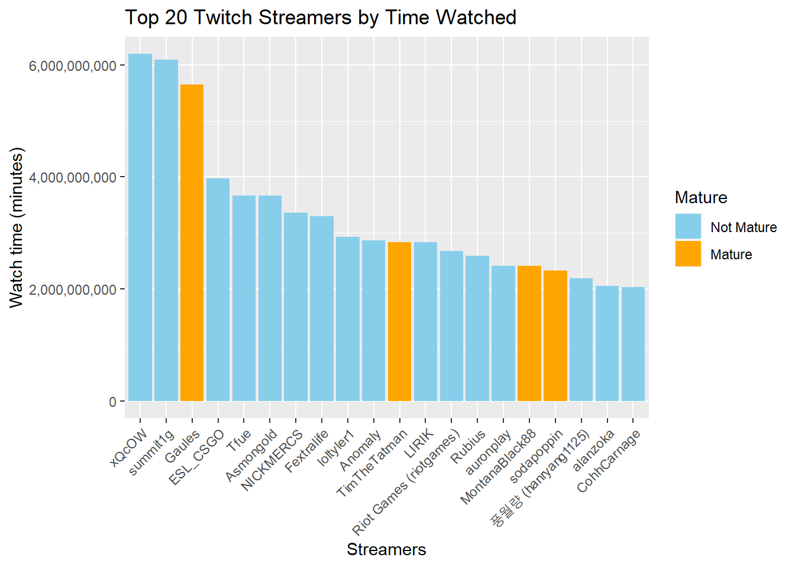
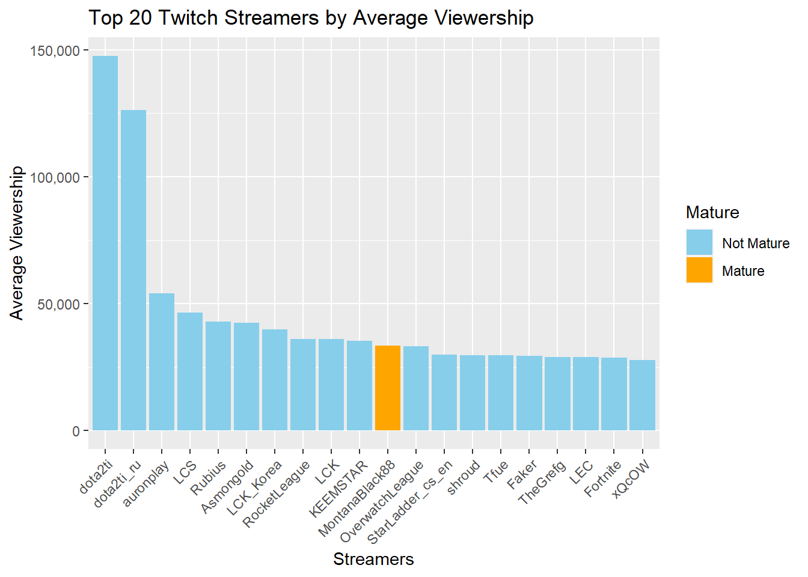
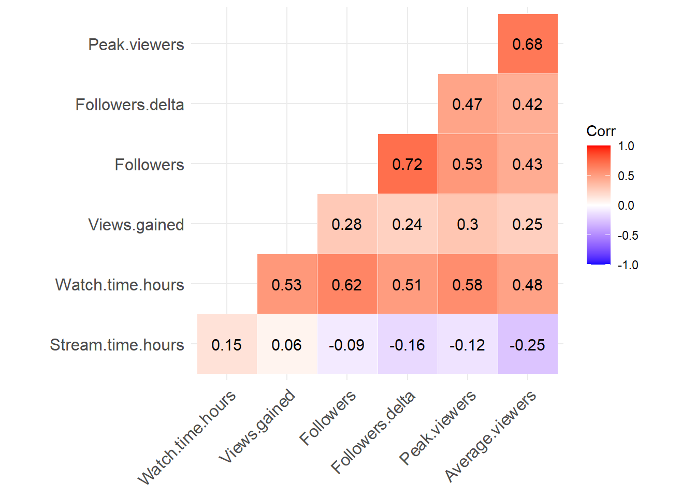

twitch_data <- read.csv("twitch_data.csv")
library(gridExtra)
library(tidyverse)
library(ggcorrplot)Twitch Statistics Project
JBP061-B-6 Statistics for Data Scientists
Mikolaj Hilgert
Mikolaj Hilgert
1. Table of Contents
2. Introduction
The goal of this analysis is to evaluate Twitch streamer data and make strategic recommendations for a content creator looking to succeed on the platform. The goal is to assist the content creator in making informed decisions and improving the performance of their Twitch channel.
Should there be a focus on mature content (18+) audience? What are the consequences one decides to do so in terms of audience reactions?
Does this choice lower or increase the chance of becoming a Twitch partner?
Is the effect of the stream minutes larger or smaller in mature content?
3. Data Description
Loading of our data-set and all the relevant libraries
head(twitch_data, 4) Channel Watch.time.Minutes. Stream.time.minutes. Peak.viewers
1 xQcOW 6196161750 215250 222720
2 summit1g 6091677300 211845 310998
3 Gaules 5644590915 515280 387315
4 ESL_CSGO 3970318140 517740 300575
Average.viewers Followers Followers.gained Views.gained Partnered Mature
1 27716 3246298 1734810 93036735 True False
2 25610 5310163 1370184 89705964 True False
3 10976 1767635 1023779 102611607 True True
4 7714 3944850 703986 106546942 True False
Language
1 English
2 English
3 Portuguese
4 EnglishThe raw column names are in need of renaming for more consistency and future ease of access:
twitch_data <- twitch_data %>%
rename(Watch.time = Watch.time.Minutes., Stream.time = Stream.time.minutes.)summary(twitch_data) Channel Watch.time Stream.time Peak.viewers
Length:1000 Min. :1.222e+08 Min. : 3465 Min. : 496
Class :character 1st Qu.:1.632e+08 1st Qu.: 73759 1st Qu.: 9114
Mode :character Median :2.350e+08 Median :108240 Median : 16676
Mean :4.184e+08 Mean :120515 Mean : 37065
3rd Qu.:4.337e+08 3rd Qu.:141844 3rd Qu.: 37570
Max. :6.196e+09 Max. :521445 Max. :639375
Average.viewers Followers Followers.gained Views.gained
Min. : 235 Min. : 3660 Min. : -15772 Min. : 175788
1st Qu.: 1458 1st Qu.: 170546 1st Qu.: 43758 1st Qu.: 3880602
Median : 2425 Median : 318063 Median : 98352 Median : 6456324
Mean : 4781 Mean : 570054 Mean : 205519 Mean : 11668166
3rd Qu.: 4786 3rd Qu.: 624332 3rd Qu.: 236131 3rd Qu.: 12196762
Max. :147643 Max. :8938903 Max. :3966525 Max. :670137548
Partnered Mature Language
Length:1000 Length:1000 Length:1000
Class :character Class :character Class :character
Mode :character Mode :character Mode :character
4. Exploratory Data Analysis (EDA)
To gain some initial insight into the top performing Streamers on the platform, we can take a look at the top 10 Streamers by watch-time, as well as showing whether they are Mature or not.
top_20_streamers_watch_time <- twitch_data %>%
arrange(desc(Watch.time)) %>%
head(20)
ggplot(top_20_streamers_watch_time, aes(x = reorder(Channel, -Watch.time), y = Watch.time, fill = Mature)) +
scale_y_continuous(labels = scales::comma) +
geom_bar(stat = "identity", position = "dodge") +
scale_fill_manual(values = c("skyblue", "orange"), labels = c("Not Mature", "Mature")) +
ggtitle("Top 20 Twitch Streamers by Time Watched") +
xlab("Streamers") +
ylab("Watch time (minutes)") +
theme(axis.text.x = element_text(angle = 45, hjust = 1))
mature <- twitch_data %>% filter(Mature == 'True')
mature_partnered <- mature %>% filter(Partnered == 'True')
str_interp("${nrow(mature) / nrow(twitch_data) * 100}% of streamers in the top 1000 stream to a mature audience.")[1] "23% of streamers in the top 1000 stream to a mature audience."str_interp("${round(nrow(mature_partnered) / nrow(mature) * 100,2)}% of streamers that stream to a mature audience and are also partnered.")[1] "97.83% of streamers that stream to a mature audience and are also partnered."Language of streamers.
twitch_data %>%
group_by(Language) %>%
summarize(Count = n()) %>%
ggplot(aes(x = reorder(Language, -Count), y = Count)) +
geom_bar(stat = "identity") +
labs(x = "Language", y = "Count") +
coord_flip()
# select all numeric columns
numeric <- twitch_data %>%
select_if(is.numeric)
# create a list of ggplot objects for each column
plots <- lapply(names(numeric), function(col) {
ggplot(numeric, aes(x = !!sym(col))) +
geom_density() +
ggtitle(col) +
theme(plot.title = element_text(size = 12, face = "bold", hjust = 0.5)) +
scale_x_continuous(labels = scales::comma)
})
# plot the list of ggplot objects in a grid
grid.arrange(grobs = plots, ncol = 2)
ggcorrplot(cor(numeric), lab = TRUE, type = "lower", outline.col = "white", hc.order = TRUE)